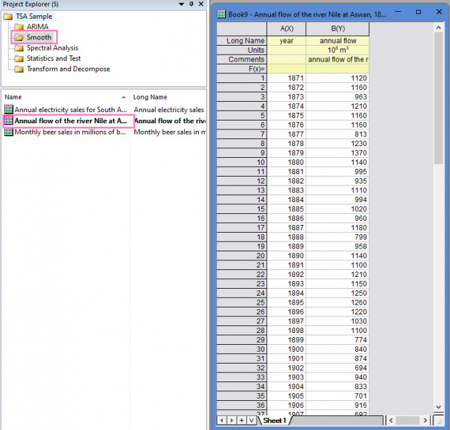
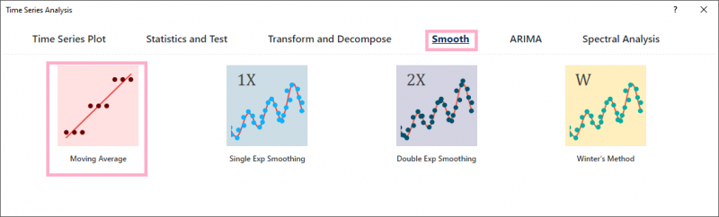
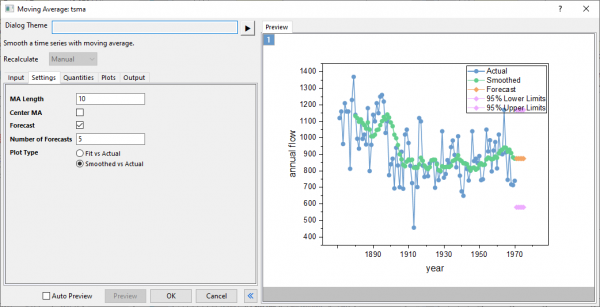
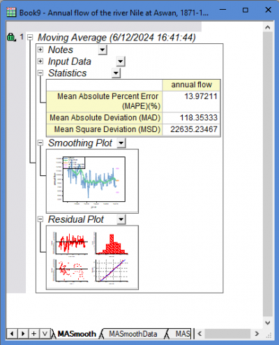

Tutorial for Moving Average Smoothing
TSA-Smooth-MovingAverage-Tutorial
Summary
This Moving Average Smoothing tool is used to smooth the time series without obvious trend and seasonality.
Tutorial
This tutorial uses App's built-in sample project. To open this sample OPJU file:
- Right click the Time Series Analysis App icon
 in the Apps Gallery and choose Show Samples Folder.
in the Apps Gallery and choose Show Samples Folder.
- A folder will open. Drag-and-drop the project file TSA Sample.opju into Origin.
Moving Average
- Expand Project Explorer docked on the left. Select folder Smooth and go to workbook "Annual flow of the river Nile at Aswan, 1871-1970".

- Highlight B, and then click the Time Series Analysis App icon in the Apps Gallery.
- In the Time Series Analysis window, select Smooth tab and then click Moving Average Smoothing button.

- A dialog will open as below.

- Set MA Length to 10. Uncheck Center MA. Enter 5 in Number of Forecasts.
Note: MA Length is the number of consecutive data that used to calculate averages as smoothed value. The larger this value, then the output line will be smoother.
Center MA controls to output the each moving average value at the center of its range, instead of at the end. |
- Click OK button to perform the smoothing. You will get the results below:
